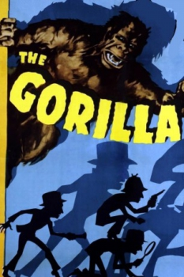
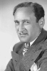
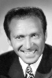
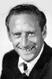
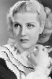

Country:United States, 68 minutes
Spoken languages:English
Genres:Horror, Thriller, Comedy
Director(s):Allan Dwan
Writer(s):Rian James, Sid Silvers
Video Codec:Unknown
Number: 76


Certification:NR
Storyline:
When an escaped circus gorilla appears to have gone on a murderous rampage, a threatened attorney calls on the detective trio of Garrity, Harrigan and Mullivan to act as bodyguards. In short order, we discover that there is more to the attorney than meets the eye, and the ape may be innocent after all. When a pretty young heiress faces peril, it's up to our heroic trio to save the day.
Cast:    
Medium: Original DVD,
Comments: Part of: 100 Greatest Horror Classics
Loaned: No
Aspect ratio: Unknown